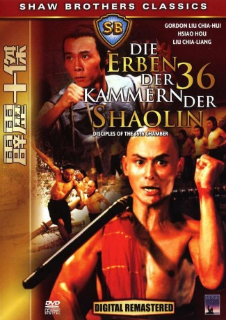

Alternativ: Disciples of the 36th Chamber (Englischer Titel)
 
 IMDB-Wertung: 6.6 / 10
IMDB-Wertung: 6.6 / 10  Metascore:
Metascore: 
Fang kann es nicht lassen, immer wieder fällt er auf. Sei es in der Schule oder in der Stadt egal wo er ist, muss er immer das letzte Wort haben welches ihm oft in Schwierigkeiten bringt. Eines Tages legt er sich mit Offizieren der Mandschus an und muss darauf hin seine Familie verlassen, seine Mutter bringt ihm ins Shaolinkloster. Unter der Aufsicht von San Te soll er die Kampfkunst der Shaolin erlernen. Aber auch hier kann er sich nicht unterordenen und es kommt wie es kommen muss er wird aus dem Kloster verjagd. Er gerät in die Fänge des Gouverneures, der ihm und seinen Freunden die geheimenen Künste der Shaolin entlocken will, doch das kann San Te nicht zulassen.
Jahr: 1985
Dauer: 93 Minuten
FSK: 16
Land: Hong-Kong Studio: M.I.B.Tonspuren:
Untertitel:
Auflösung: 1080p (1920x816) Größe: 7618 MB
Regisseur: Chia-Liang Liu
Drehbuch: Chia-Liang Liu
Soundtrack:
Darsteller:
 Chia-Hui Liu als Monk San Te
Chia-Hui Liu als Monk San Te Qiu Yuen als
Qiu Yuen als  Shen Chan als Education officer Sha Duo'er
Shen Chan als Education officer Sha Duo'er Tien-Chu Chin als
Tien-Chu Chin als  Lao Shen als
Lao Shen als  Chien Sun als
Chien Sun als  Ching Ho Wang als
Ching Ho Wang als  Han Chen Wang als
Han Chen Wang als Datei: X:\HD-Eastern-Collections\36 Kammern der Shaolin\Erben der 36 Kammern der Shaolin, Die (1985, FSK16, 1920x816) 3D.mkv seit 01.03.2018
Festplatte: HD Eastern+Western
 Es gibt insgesamt 8 Filme in der Gruppe 'HD-Eastern-Collections\36 Kammern der Shaolin'
Es gibt insgesamt 8 Filme in der Gruppe 'HD-Eastern-Collections\36 Kammern der Shaolin'